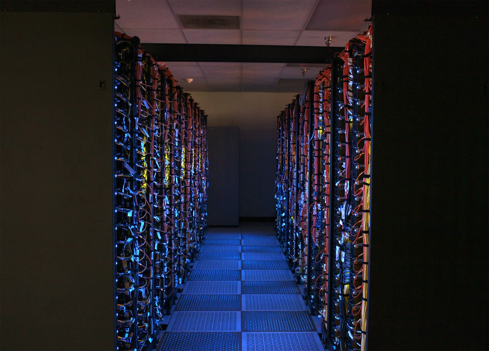

Portal operasional
Jika data tersebar di beberapa spreadsheet, satu portal dapat menyatukan pengajuan, persetujuan, dan riwayat transaksi.
Pengembangan Website
PT Metromatika Teknologi Rekayasa
Kami membangun aplikasi, jaringan, dan infrastruktur cloud yang menghubungkan pekerjaan Anda sehari-hari.
Diskusikan kebutuhan AndaJelajahi layanan kami. Pilih bidang yang ingin Anda bahas dan lihat apa yang bisa kami kerjakan.
Bangun situs perusahaan atau aplikasi web dengan CMS dan integrasi sistem.
Contoh portal inventaris untuk mencatat perangkat, stok, dan pengajuan kebutuhan tim. Data laptop pada panel berasal dari dataset publik DummyJSON.
Lihat detail layananKembangkan aplikasi Android dan iOS untuk pelanggan atau tim lapangan.
Contoh aplikasi teknisi lapangan dengan daftar tugas, status pengerjaan, catatan, dan dokumentasi pekerjaan. Tugas dan jumlah yang ditampilkan merupakan simulasi.
Lihat detail layananUji alur penggunaan dan prototipe sebelum masuk ke tahap pengembangan.
Contoh prototipe alur permintaan barang, dari pemilihan perangkat sampai konfirmasi. Wireframe, komponen antarmuka, dan skenario uji membantu meninjau alur sebelum pengembangan.
Lihat detail layananHubungkan kantor dan sistem internal melalui IP publik, VPN, atau Metro Ethernet.
Contoh koneksi kantor pusat dan dua cabang melalui VPN. Tinjauan dapat mencakup kapasitas koneksi, pembagian akses pengguna, dan pemantauan status jaringan.
Lihat detail layananPindahkan aplikasi ke cloud dan siapkan deployment serta pemantauan.
Contoh dashboard yang merangkum kondisi aplikasi, penggunaan CPU, memori, dan status lingkungan deployment. Persentase dan nama lingkungan di panel merupakan data simulasi.
Lihat detail layananNilai risiko sistem dan susun prioritas perbaikan keamanan.
Contoh ringkasan audit untuk kontrol akses, konfigurasi keamanan, dan pencatatan aktivitas. Setiap temuan dapat dilengkapi bukti, tingkat risiko, dan rekomendasi perbaikan.
Lihat detail layananJakarta / Medan
Metromatika menangani pengembangan aplikasi, konektivitas, cloud, dan keamanan. Kami juga membahas kebutuhan integrasi AI dan automasi proses saat konsultasi.
Sebelum mengusulkan pekerjaan, kami meninjau sistem yang sudah dipakai, siapa yang menggunakannya, dan kendala operasional yang perlu diselesaikan.
Contoh solusi untuk kebutuhan operasional. Diskusikan skenario yang sesuai dengan bisnis Anda.
Jika data tersebar di beberapa spreadsheet, satu portal dapat menyatukan pengajuan, persetujuan, dan riwayat transaksi.
Pengembangan WebsiteJika cabang perlu mengakses sistem pusat, petakan lokasi, kebutuhan kapasitas, dan aturan akses sebelum memilih koneksi.
Internet & JaringanJika server perlu dipindahkan, inventarisasi ketergantungan aplikasi, jadwalkan perpindahan, dan siapkan pemantauan setelah migrasi.
Cloud & DevOpsPetakan alur kerja, sistem, pengguna, dan kendala yang perlu ditangani.
Tentukan hasil kerja, jadwal, biaya, dan tanggung jawab masing-masing pihak.
Tinjau hasil secara berkala dan uji fungsi sesuai lingkup yang disepakati.
Bahas dokumentasi, serah terima, dan kebutuhan dukungan lanjutan.
PERTANYAAN UMUM
Masih ada yang ingin ditanyakan?
Kami siap mendengar kebutuhan Anda.
Metromatika menyediakan pengembangan website dan aplikasi mobile, UI/UX design, internet dan jaringan, cloud solutions, serta keamanan siber. Kebutuhan integrasi AI dan automasi proses bisnis juga dapat didiskusikan saat konsultasi.
Ceritakan tujuan, kendala operasional, dan sistem yang digunakan saat ini. Tim akan membantu memetakan kebutuhan sebelum menentukan ruang lingkup solusi dan penawaran.
Biaya, cakupan, pajak, dan periode tagihan jika berlaku dicantumkan dalam penawaran setelah kebutuhan Anda dibahas.
Ketersediaan layanan bergantung pada lokasi dan jaringan. Hubungi tim melalui WhatsApp dengan alamat pemasangan agar cakupan dan pilihan koneksi dapat diperiksa.
Isi formulir konsultasi di bawah atau hubungi WhatsApp +62 821 6661 5433 dan email info@metromatika.co.id. Sampaikan layanan yang dibutuhkan agar pembahasan lebih terarah.
LANGKAH BESAR DIMULAI DARI SINI
Sampaikan sistem yang Anda gunakan dan kendala yang ingin diselesaikan.
info@metromatika.co.id +62 821 6661 5433Jl. Kuningan Barat Raya No. 9B,
Jakarta Selatan, DKI Jakarta
Jl. Dr. Mansyur No. 9B,
Medan, Sumatera Utara